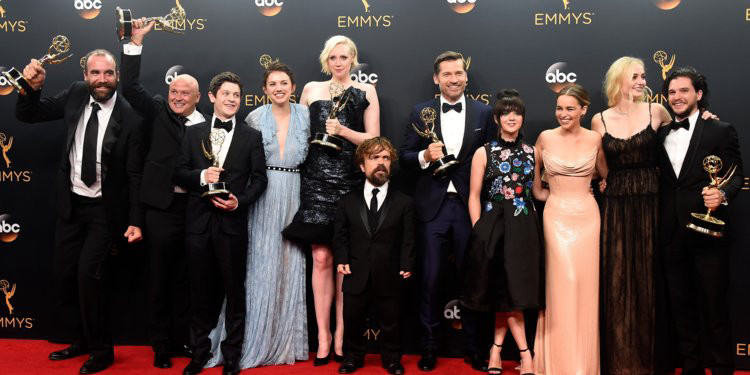
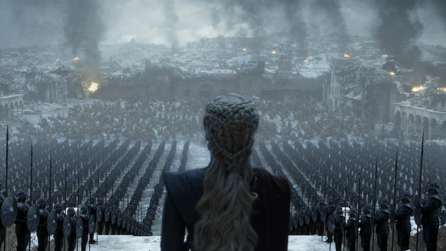
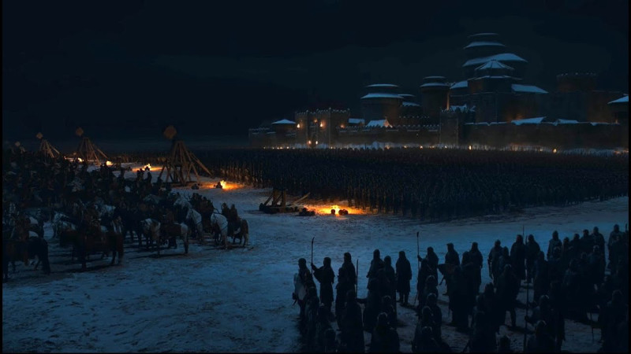

Game of Thrones sẽ tranh giải Kịch bản và Đạo diễn xuất sắc tại Emmy 2019
Ha Quoc Viet

Mới đây, HBO đã “cử” một vài tập trong season cuối của series Game of Thrones để tham gia tranh giải Emmy ở một số hạng mục, trong đó đáng chú ý là Kịch bản xuất sắc nhất và Đạo diễn xuất sắc nhất.
Ở hạng mục Kịch bản xuất sắc nhất, HBO đã mạnh dạn gửi tập cuối của toàn bộ series, “The Iron Throne" tham gia tranh cử. Tập phim được chỉ đạo bởi David Benioff và D.B. Weiss, đây cũng chính là tập có số điểm IMDb đáng thất vọng nhất cả series, với 4.3/10. “Vượt xa khỏi kỳ vọng" là nhận xét của người hâm mộ dành cho nó, tất nhiên là theo hướng tiêu cực mà không ai mong muốn. Khán giả đại chúng đánh giá The Iron Throne có cốt truyện lỏng lẻo, gượng ép, tiêu biểu là cách D&D “bắt" Brann lên trị vì 6 vương quốc qua bài “diễn văn" dở tệ nhất của Tyrion trong cả series. Quyết định này của HBO càng trở nên khó hiểu khi nhiều tập phim khác của mùa này dù được đánh giá cao nhưng lại bị “bỏ rơi", đặc biệt là tập 2, A Knight of Seven Kingdoms với những cuộc gặp gỡ và màn hội thoại đầy cảm xúc.

The Iron Throne - tập phim được cử đi tranh giải Kịch bản xuất sắc nhất
Hạng mục đáng chú ý thứ 2 là Đạo diễn xuất sắc nhất với 3 đại diện từ Game of Thrones là The Last of the Starks đạo diễn bởi David Nutter, The Iron Throne của D&D và The Long Night của Miguel Sapochnik. Trong đó, The Long Night, tập phim về trận chiến bi tráng giữa người sống và binh đoàn xác sống được coi là đại diện sáng giá nhất cho hạng mục này. Ngoài ra, tập phim muốn xem phải tăng sáng hết cỡ màn hình nói trên cũng được gửi đi tranh cử cho hạng mục Quay phim xuất sắc nhất tại giải Emmy lần này. Trong khi đó, tập phim lấy bối cảnh ban ngày sáng rõ hơn, The Bells lại không được nhà sản xuất tin tưởng gửi đi tranh giải tại các hạng mục quan trọng nhất của Emmy.

Cảnh trong tập The Long Night
Bên cạnh các hạng mục kể trên, nhiều diễn viên của GoT cũng tham gia tranh cử các hạng mục diễn xuất tại Emmy 2019, tiêu biểu là Kit Harington, Emilia Clarke hay Nikolaj Coster-Waldau. Liệu, Game of Thrones có tiếp nối được thành công của các season trước tại Emmy, đặc biệt là khi giải thưởng này đang có những thay đổi trong cách lựa chọn người chiến thắng?
Giải thưởng danh giá của ngành công nghiệp truyền hình này dự kiến diễn ra vào ngày 22/9 sắp tới.
Xem thêm danh sách đầy đủ ứng cử viên giải Emmy tại đây.
 Ha Quoc Viet
Ha Quoc Viet